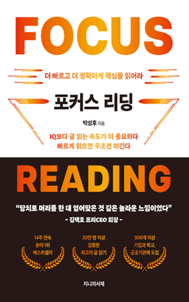

학습 목표
- 1. 복잡한 정보를 정리하는 과정에서 새로운 아이디어와 영감을 얻을 수 있다.
- 2. 서로 다른 전문 영역의 지식을 결합하여 많은 사람들이 쉽게 이해할 수 있도록 공유할 수 있다.
교육 특징
-
1. 다양한 사례를 통해 글을 읽고 쓰는 방법을 알아보자!
여러 위인들의 글읽기와 글쓰기 훈련법을 통해 다양한 글읽기, 글쓰기 훈련법을 파악하고, 스스로 훈련법을 적용할 수 있다.
-
2. 주요 핵심 내용을 재구성한 도입 영상 구성
주요 핵심 내용의 일부를 도입 영상으로 재구성하여인사이트 영상을 제작하고, 학습자의 학습 흥미를 유발하는 강의
-
3. 핵심 키워드를 활용한 학습 내용 복기
차시별 핵심 내용의 주요 키워드를 통해 복습의 기회 제공
교육 대상
- 1. 전문 지식 습득을 위해 빠르고 정확한 글 읽기를 해야 하는 직장인
- 2. 차별화된 학습능력으로 성공적인 이직 등 인생 2막을 원하는 직장인
강의 목차
- 제1장 경쟁에서 이기는 것은 IQ가 아니라 글 읽는 속도다
- 제2장 고수들의 초두뇌 훈련법
- 제3장 글자가 아니라 핵심을 읽는다
- 제4장 세상에서 가장 단순한 요약법
- 제5장 글쓰기의 시작과 끝
- 제6장 마음을 움직이는 글쓰기 & 논리적 글쓰기
- 제7장 고수들의 글쓰기 훈련법
- 제8장 논리의 마스터 로직 FOCUS 5단계 논법
강사 소개
강사명
박성후
경력
現 독서컨설턴트 및 독서지도사
現 팍스북 대표
《포커스 씽킹》,《포커스 디베이트》,
《포커스 라이팅》,《The Vision》등 저서
現 팍스북 대표
《포커스 씽킹》,《포커스 디베이트》,
《포커스 라이팅》,《The Vision》등 저서
참고 도서

도서명
포커스 리딩-더 빠르고 더 정확하게 글을 읽어라
저자명
박성후
도서소개
글은 사람이다. 라는 통찰을 통해 삶을 바꾼 저자 박성후. 그는 최고의 전문가를 만나는 길이 바로 책
속에 있다고 말하며, 글 읽기의 본질은 원하는 분야의 스승을 만나는 것임을 강조합니다. 이 책은 느린 속도와 부족한 활용 때문에 성과를 내지 못했던
독자들에게 정확한 목표의식으로 더 빠르게 읽고, 핵심을 뽑아 삶에 적용하는 실전 노하우를 제시합니다.